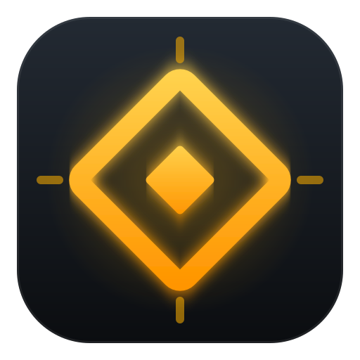
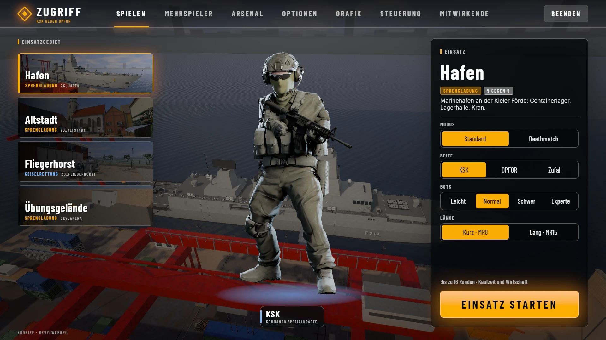
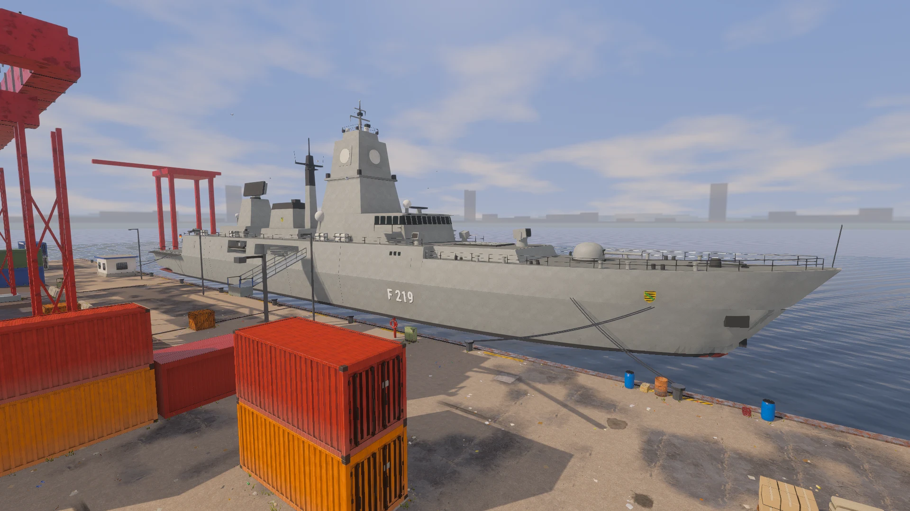
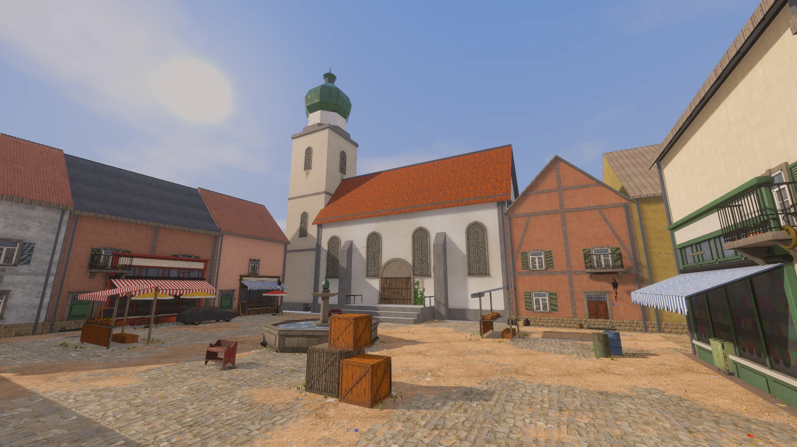
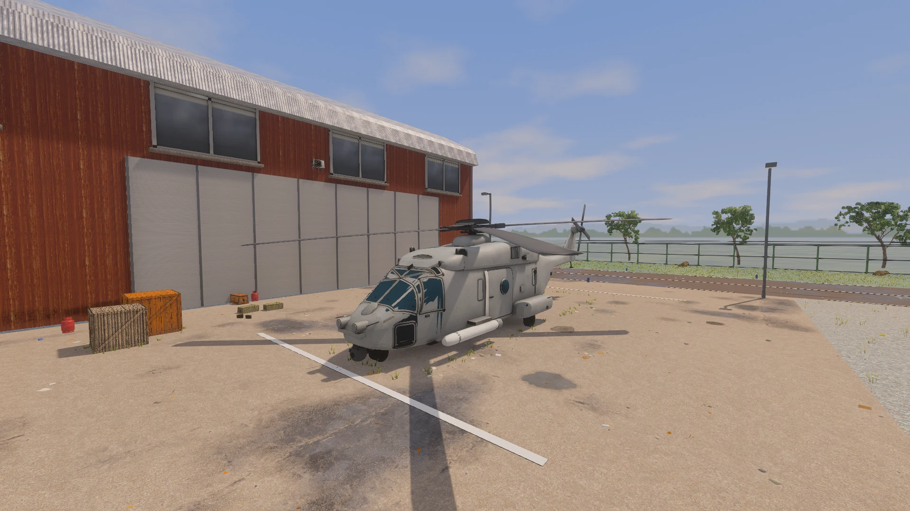

BOMB DEFUSAL
Attackers plant a bomb at one of two sites. Defenders must stop the plant or defuse the bomb before it explodes.
HAFEN · ALTSTADT
ZUGRIFFTACTICAL FPS DownloadZUGRIFF · WINDOWS, LINUX & macOS
Play bomb defusal, hostage rescue, and deathmatch with bots or friends.
EARLY DEVELOPMENT · DESKTOP

Buy weapons and equipment before each round, then work with your team to complete the objective. Choose deathmatch for continuous fights with respawns.
Attackers plant a bomb at one of two sites. Defenders must stop the plant or defuse the bomb before it explodes.
HAFEN · ALTSTADTThe rescue team must reach the hostages and escort them to the rescue zone. The opposing team tries to stop them.
FLIEGERHORSTRespawn after each death and keep fighting until the timer ends. Use this mode to practice aiming and try different weapons.
ALL THREE MAPSFight through a harbor, an old town, or an air base. Each map has its own routes and objective locations.

A naval harbor with warehouses, container lanes, and two bomb sites.

An old town with narrow streets, a market square, and a brewery yard.

An air base with hangars, a fuel depot, and hostages in the operations building.
Available for Windows, Linux and macOS.
Early development. German in-game interface.
Includes everything needed to play and host a server.
Checking the latest release…
64-bit PC · Portable ZIP
VIEW RELEASES Extract the archive. Open zugriff.exe.x86_64 · AppImage + tar.gz
VIEW RELEASES Make the AppImage executable, then launch. Vulkan driver required.Apple silicon · Disk image
VIEW RELEASES Copy ZUGRIFF.app to Applications. macOS may ask you to allow it in Privacy & Security.Yes. Start a local match from the game menu. Bots play both sides, with four difficulty levels and radio orders. You only need a network connection for multiplayer.
One player runs the included server. Everyone adds its address in the multiplayer menu, then joins the same room. See the setup instructions for local networks and internet play in the README.
No. ZUGRIFF is in early development, so you may encounter bugs and features may change. The game interface is currently German. Report problems on the GitHub issue tracker.
Find the code, build instructions, credits, and release history in the ZUGRIFF repository.